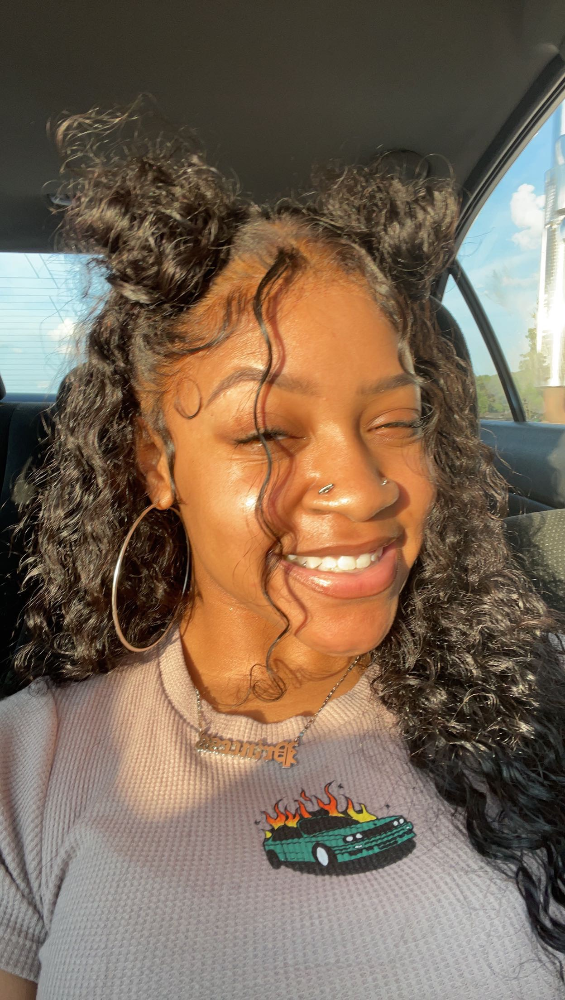

Hi! I'm Amya, you can call me Mya.I am the owner + CEO of Alchesthetics. I am a licensed esthetician certified and trained in a variety of facial treatments including, but not limited to, dermaplaning, microdermabrasion, hydrodermabrasion, chemical peels, and enzymatic exfoliation.
I am experienced in thorough consultations and skincare regimen development and excellent customer service resulting in consistent results + satisfaction. I am beyond passionate about integrative healing and holistic skincare and believe everyone deserves to transform the trajectory of their skin inside out.
My dedication to comprehensive skincare has led me to this career.
I am diligently devoted to further expanding my knowledge on skin and body interdependence through independently studying anatomy, physiology, biochemistry, and holistic healing techniques. I proudly incorporate my learning into practice thorough holistic esthetics.
I understand the importance of knowledge and compassion as it pertains to integrative healing and what part a phenomenal esthetician plays in that. Healing is an incredibly emotional experience, and I proudly cultivate a safe and warming environment through positive, attentive, goal oriented guidance + gentle reinforcement to help you look + feel the most confident.
*****DISCLAIMER*****
I am not a dietitian, nutritionist, or physician of any sorts, I am LICENSED esthetician who independently studies different scientific avenues and the effects of nutrition + natural ingredients on the skin + body to encourage knowledge and holistic healing that’s not just skin deep. Learning to heal your skin inside + out through nourishing food and consistent lifestyle habits makes you radiate from within.
**The content and information provided is for informational + educational purposes only. It is not intended for medical advice, treatment, or diagnosis. Information provided is to encourage personal research and medical assistance as necessary.**